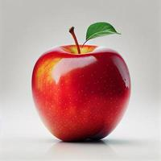
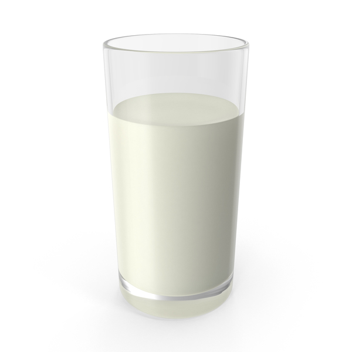

Їжа - це не лише джерело енергії, а й задоволення та культура.
Продукти харчування поділяються на різні категорії: фрукти, овочі, м'ясо тощо.
| Фото | Посилання | Опис |
|---|---|---|
|  | Детальніше | Свіже червоне яблуко |
|  | Детальніше | Органічне молоко |
| Категорія | Продукти | |
|---|---|---|
| Назва | Ціна | |
| Фрукти | Яблуко | 30 грн |
| Банан | 40 грн | |